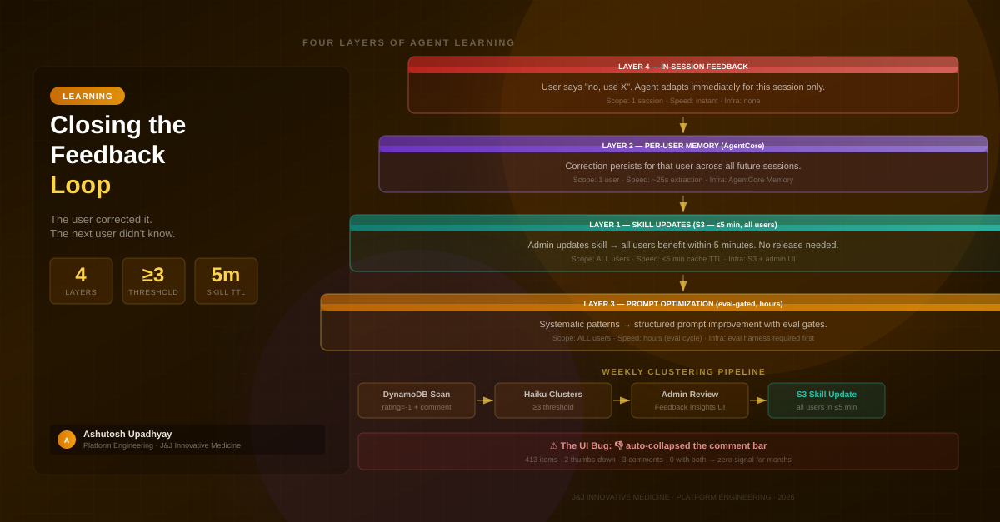

The agent was wrong. The user corrected it. The next user got the same wrong answer. Here's how to close the loop — without fine-tuning.
A researcher on our proteomics team corrected the same agent behavior three times in one week. Every time they asked the agent to compare cell line sensitivity across compounds, it would join DepMap data to the RSC dataset directly — which runs without error, but silently drops most of the cell lines because the names don't match exactly across those two datasets. The agent then reports a low match rate as a caveat instead of fixing it. The right workflow is to call Cellosaurus first, build a name-to-ID mapping table, then join.
The researcher corrected it each time: "you should pre-resolve cell lines with Cellosaurus before joining to DepMap, not after." Each time, the agent adapted. For the rest of that session, it got it right. The next session, it forgot. The next researcher who hit the same workflow never even knew there was a right way to do it.
We had built a system that collected feedback. We had thumbs-up and thumbs-down buttons, a comment field, and a DynamoDB table logging everything. We had the infrastructure. We just hadn't closed the loop — the corrections died with the session, the table filled up, and nothing downstream ever read it.
This is the default state for almost every production agent. The feedback infrastructure exists but the learning doesn't happen. This post is about four concrete layers for changing that, ordered from fastest to most durable.
The fundamental problem is that LLMs are stateless. Every new conversation starts from the model weights, which change only when you fine-tune. Everything else — conversation history, system prompts, tool results, user corrections — lives in the context window and disappears when the session ends.
The obvious fix is fine-tuning, but it has serious practical problems for domain corrections:
For the class of corrections we care about most — systematic workflow errors, domain-specific identifier resolution, source-specific data handling — fine-tuning is the wrong tool. The corrections are precise, domain-specific, and can often be expressed as a short rule. There are much faster paths.
Think of agent learning as a pyramid. The fastest layer is narrowest in scope. The most durable layer affects everyone. You want all four — not because any single layer is sufficient, but because they handle different timeframes and different failure modes.
This one is free. When a user says "no, use X instead of Y" mid-conversation, the correction lives in the conversation history. The LLM sees it when it processes the next turn and adapts immediately. No infrastructure required, no latency.
The limitation is obvious: it ends with the session. But it's still worth thinking about explicitly, because some corrections don't need to be durable. A one-time clarification about a specific dataset shouldn't necessarily persist to every future user. Layer 4 handles transient corrections naturally.
This is where AWS AgentCore Memory fits. When a user gives a thumbs-down with a substantive written comment (more than 20 characters), the correction is written to a user-scoped namespace in the memory store. The next time that user starts a session, the correction surfaces as part of the session initialization context. The agent sees it before the user says anything and adjusts its behavior accordingly.
The key constraint is that this is per-user. If researcher A corrects the Cellosaurus workflow, researcher B still gets the wrong behavior until they correct it themselves. Per-user memory is powerful for persistent individual preferences — but it doesn't benefit the team.
It also introduces a data architecture challenge. User corrections are stored under a namespaced actorId derived from their email. The namespace scoping is critical — one of the first bugs we hit in production was a namespace path that returned all users' corrections, not just the current user's. More on this in the companion post on cross-session memory.
This is the highest-leverage layer. Skills are domain knowledge documents stored in S3 that the agent fetches at query time via a get_skills tool call. They describe data sources, identifier resolution rules, workflow recommendations, common mistakes, and score interpretation guidance. When the agent is about to query a dataset it's uncertain about, it fetches the relevant skill and uses it to guide its approach.
The critical property of skills is that S3 is the canonical source. The code dictionary in the application is a seed — it writes to S3 only when the S3 object doesn't exist. Once a skill exists in S3, code changes are ignored at runtime. Editing the Python file and deploying a new image has zero effect on the running skill.
This means an admin can update a skill via a web UI — no code change, no image build, no deployment — and every pod picks it up within 5 minutes (the cache TTL). One correction, all users, near-instant.
The Cellosaurus workflow correction is exactly the kind of thing that belongs in a skill. A one-sentence rule in the cellosaurus or depmap skill: "Always call cellosaurus_agent to resolve cell line names before joining RSC or DepMap data." That rule affects every user who queries those datasets, for every session, forever.
The most powerful and most expensive layer. When you have enough feedback signal to identify systematic patterns — the agent consistently misuses certain tools, systematically over-claims on incomplete data, routinely fails a specific class of query — those patterns may indicate gaps in the system prompt rather than the skill layer.
Prompt optimization requires an eval harness as a prerequisite. You can't safely change a system prompt without measuring whether the change improved the problematic behavior and didn't regress anything else. This is the layer we haven't shipped yet — not because the approach is wrong, but because it requires an evaluation harness as a prerequisite. We're building toward it: Tier 1 deterministic trajectory evaluations running nightly, with prompt changes gated on all three tiers passing. Until the harness exists, this layer is designed but not deployed.
This layer operates on a longer cadence than the others — hours to days rather than minutes — and should be reserved for patterns that recur across many users and many sessions. A correction that appears twice is noise. A correction that appears seventeen times across different users on the same data source pattern is a signal worth spending an eval cycle on.
Reading DynamoDB manually every week doesn't scale. The clustering job automates the signal extraction:
# Weekly feedback review job
# Scans omicsagent-prompts for user comments (any sentiment)
# FilterExpression: begins_with(pk, "user#") AND attribute_exists(comment)
# No timestamp filter — drop it; feedback timestamps aren't set at write time
def scan_feedback_comments(table) -> list[dict]:
items = []
scan_kwargs = {
"FilterExpression": Attr("pk").begins_with("user#") & Attr("comment").exists(),
}
while len(items) < MAX_ITEMS:
resp = table.scan(**scan_kwargs)
items.extend(resp.get("Items", []))
if "LastEvaluatedKey" not in resp:
break
scan_kwargs["ExclusiveStartKey"] = resp["LastEvaluatedKey"]
return items[:MAX_ITEMS]The DynamoDB table at this scale — a few thousand rows — costs fractions of a cent to scan. No GSI needed, no pagination complexity beyond the LastEvaluatedKey loop.
Once you have the comments, you send them to a fast model for clustering:
prompt = f"""
You are reviewing {len(items)} feedback items for a bioinformatics AI.
Group into 3-8 clusters by error topic.
For each cluster with ≥{CLUSTER_MIN} items, write a specific rule
that could be added to the agent's domain knowledge.
Identify the most relevant skill ID from: {sorted(KNOWN_SKILL_IDS)}.
Items:
{chr(10).join(summaries)}
Return JSON: {{"clusters": [{{"topic": "...", "count": N,
"related_skill_id": "...", "suggested_rule": "...",
"sample_corrections": [...]}}]}}
"""The threshold of ≥3 is a noise filter. One correction might be personal preference or a misunderstanding. Three corrections on the same topic from different users, in different sessions, is a pattern worth acting on.
The output surfaces in an admin UI as candidate skill updates. An admin reads the cluster, edits the relevant skill via the web UI (or writes a new one), and the change propagates within 5 minutes to all pods. No code change, no deployment, no review cycle beyond the admin's judgment.
The ≥3 threshold isn't magic. You'll need to tune it based on your user volume. At 50 active users, 3 corrections might represent noise. At 5 active users, 3 corrections might represent everyone who's tried that workflow. Track how often clustered corrections turn out to be valid skill updates, and adjust the threshold accordingly.
We had this architecture designed and partially built for months before we realized the input signal was zero. The DynamoDB table had 413 items. Two had a thumbs-down rating. Three had a comment. Zero had both — not a single row where a user had rated the response negatively AND left a comment explaining why.
The clustering job had nothing to cluster. The skills were never updated from user corrections. And the same bug silenced Layer 2 as well — per-user corrections are only written when a user gives a thumbs-down with a comment, which also had zero co-occurring pairs. The entire durable learning path — Layer 1 skill updates and Layer 2 per-user memory — was simultaneously disabled by one frontend state flag. The feedback infrastructure was complete and the learning loop was completely dead.
Root cause: When a user clicked 👎, the feedback bar immediately collapsed to a "Thanks for your feedback!" message, and the comment button disappeared. The comment input was inside an {#if !feedbackSubmitted} block. Clicking thumbs-down set feedbackSubmitted = true, which rendered the comment box unreachable forever. You could only leave a comment if you clicked 💬 first — before rating — which nobody did, because it wasn't the natural interaction flow.
The fix was a single behavioral change in the frontend: clicking 👎 now sets feedbackRating and auto-opens the comment box, but doesn't set feedbackSubmitted = true. That flag only gets set when the user submits a comment or explicitly rates positively. The feedback bar stays visible; the user can provide context for their correction.
This is a pattern worth internalizing: feedback infrastructure without signal is invisible failure. The system looks operational — there's a table, there's a schema, there's a job — but if the UX doesn't naturally produce the data the job needs, the loop is open. Test your feedback collection path explicitly, not just your feedback processing path.
| Dimension | Skill Update | Fine-Tuning |
|---|---|---|
| Speed to production | ≤5 minutes (cache TTL) | Hours to days |
| Reversibility | Edit or delete the S3 object | Requires another fine-tune run |
| Traceability | Every skill has a version and audit trail | Hard to trace which examples caused which behaviors |
| Infrastructure | S3 bucket + admin UI | GPU compute + curated dataset + eval pipeline |
| Scope | Precise — only affects queries that fetch that skill | Global — affects all queries through that model |
| Dataset requirements | One rule, written in plain language | Hundreds of curated positive/negative examples |
| Coverage | Only when agent calls get_skills for that source | All queries, all models |
Skills lose on coverage — if the agent doesn't call get_skills before a particular operation, the skill rule doesn't apply. For cross-cutting behavioral corrections that should apply everywhere (not just when querying a specific data source), skills are the wrong layer; that belongs in the system prompt.
But for the class of corrections that actually generates the most user feedback — data source-specific workflows, identifier resolution rules, score interpretation thresholds — skills are dramatically faster, safer, and more maintainable than fine-tuning.
Not every correction should persist. The clustering threshold filters most noise, but you still need human judgment in the loop before updating a skill. Some corrections that look systematic are actually:
The admin review step isn't bureaucracy. It's the filter that keeps corrections from being self-referentially wrong. The clustering job surfaces candidates; a human with domain expertise decides what's systematic enough to encode.
The loop isn't fully closed yet. The clustering job surfaces candidates to the admin UI, and an admin can approve them into a skill update. But the skill update doesn't flow back into the eval harness to verify it fixed the original correction pattern. That feedback — "did updating this skill actually reduce corrections on this topic?" — is the next iteration. We're building toward it, but it requires the Tier 2 evaluation pipeline first.
Putting it together: a correction that a user makes today should flow through the system in order of urgency and durability.
If it's a one-time contextual correction, Layer 4 handles it. The session history carries it forward for the rest of that session. Nothing persists, nothing needs to.
If it's a repeated correction for that specific user — the same workflow mistake they've pointed out before — Layer 2 catches it. The per-user corrections namespace surfaces it at the start of their next session. The agent knows, before the user says anything, that this user has a specific preference about cell line resolution order.
If it's a pattern that appears across multiple users on the same topic — ≥3 corrections with the same underlying error — Layer 1 handles it. The admin sees the cluster, edits the relevant skill, and all users benefit within 5 minutes.
If the pattern is systemic enough that it can't be captured in a skill — it's about how the agent reasons about a class of problems, not just how it handles a specific data source — it becomes a prompt optimization candidate, gates on the eval harness, and deploys as a system prompt change.
None of this requires fine-tuning. All of it is reversible. The fastest path (skill update) takes 5 minutes from identifying the pattern to every user benefiting. The slowest path (prompt optimization) runs on a weekly cycle with eval gates. Both are dramatically faster and safer than fine-tuning for the corrections that matter most in practice.
feedbackSubmitted = true before the user had a chance to explain. One behavioral change restored the entire feedback loop